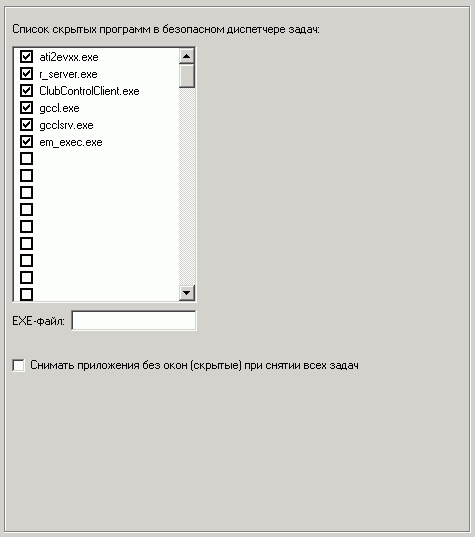

Здесь устанавливается список задач, которые не будут видны в безопасном диспетчере задач.
Также эти задачи не будут сниматься при вызове функции "Снять все задачи" в сервере или шелле.
К скрытым задачам могут относиться также задачи, видные только в системном трее.
Способы вызова безопасного диспетчера задач настраиваются на вкладке "Интерфейс: Меню"